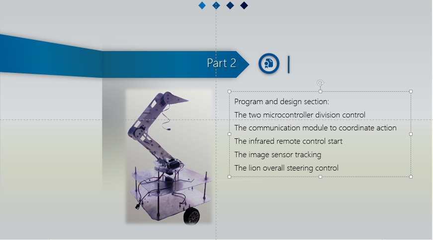
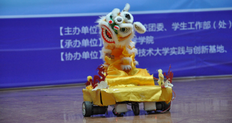

University of Science and Technology China “Robogame” competition-Lion RobotAbstract: The theme of this competition is folk performance. The goal of our project is to make a lion dance (Chinese traditional performance project) robot, and finally be able to perform the corresponding action at a certain musical rhythm. We use two groups of control systems, the upper part of the dance consists of three servo motors. The lower part consists of two DC motors. The two systems can communicate with each other to cooperate with the completion of action. We split the music according to the rhythm of the music, and design the action respectively, so that the robot's movement can conform to the rhythm of the music, to achieve the performance of lion dance. In the final competition, we ranked seventh in the more than 20 groups. Pictures:  |